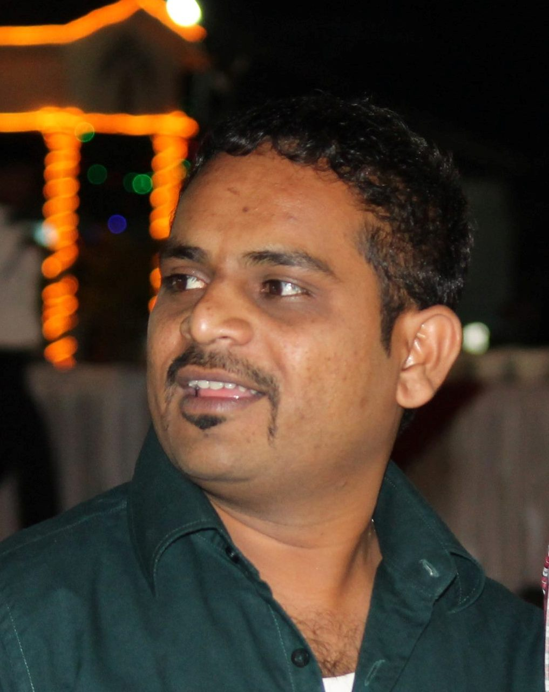

Rahul Polake

Professional Summary
With a remarkable track record spanning more than 15 years in the Information Technology sector, I bring a treasure trove of expertise in project management, team leadership, and sales operations. My career has been a testament to an unwavering dedication to delivering outstanding results and spearheading triumphant endeavors.
- Demonstrated skills in working with the PMO teams to develop high-quality programs that solve business problems and provide tangible results. Monitored complex projects and worked cross-functionally with various internal groups to determine project scope, requirements, and resources; and defined best practices while ensuring project activities aligned with business objectives.
- Strong understanding of project methodologies and analytical skills in leading process improvement initiatives through system changes and process mapping. Experienced in preparing various reports, project health indicators, RAID, and project status dashboards.
- Proven ability to identify customer needs and provide solutions that increase customer retention and satisfaction. Excels at building long-term relationships with customers and developing loyalty.
- Experienced, results-driven leader who accelerates customer success, delivers implementation results, and champions adoption; record of accomplishment with high client satisfaction and a showcase of successful project delivery.
- Proficiency in various tools, including Oracle (Financial Reporting), Salesforce (Sales and Marketing), PeopleSoft (HR), and Salesforce.
- Exceptional communication, relationship-building, analytical, and problem-solving skills.
Education
Complete my Bachelors in Accounting
- SSC
- HSC
- Bcom
Work experience
Fujitsu Consulting Pvt. Ltd. Sales Operations Specialist (Technical Support Engineer)
Date: September 2016 – January 2019
Sales Operations - Provided support as Demand / Intake lead and Coordinator across American, and Caribbean Business Units
- Support the development of sales and operations strategy, understand priorities, and execute Operational plans
- Optimize sales and operational efficiency through innovative thinking, process improvement, system enhancements, and best practice sharing
- Engage and work with aligned operations teams and lines of business to more effectively achieve data needs and analysis results
- Develop and maintain sales analytics reports and dashboards to provide actionable insights that support data-driven decision-making for the sales and executive leadership teams
- Provide SalesForce administration setup and training for all users, system configuration, reporting, documentation of best practices, and maintenance of data
- Partner with IT teams to understand new capabilities available in SalesForce and train sales representatives to use these capabilities
- Apply data cleansing techniques to improve the quality and accuracy of contacts and accounts databases and develop processes and methods for acquiring net new names to our database
Fujitsu Consulting Pvt. Ltd.| PMO (Technical Support Engineer)
Date: August 2014 – September 2016
Dedicated PMO/Business Analyst with a proven track record of delivering strategic insights and technological direction to enhance operational efficiency. Instrumental in providing collaborative 'IT Corporate Network Infrastructure Service Management' for diverse groups.
- Spearheaded strategic decision-making processes, providing synergistic technological direction to the group's IT initiatives.
- Managed resource plans, travel plans, and project planning, ensuring efficient allocation of resources.
- Monitored project budget and demands, ensuring strict adherence to allocated budgets and timely identification of variances.
- Collaborated with line managers to collect resource demands, updating the Demand Management System accordingly.
- Produced Oracle reports to track travel budget consumption against planned budgets, ensuring financial transparency.
- Identified and mitigated risks and exposures, ensuring timely closure with respective owners for streamlined project execution.
- Prepared and presented variance tracking views for finance and internal stakeholders, fostering data-driven decision-making.
- Developed weekly governance decks, facilitating effective communication and alignment across diverse teams.
- Updated project plans regularly to ensure alignment with evolving business needs and priorities.
- Managed invoices and purchase orders, ensuring accuracy and timeliness in financial transactions.
- Proactively published missing timesheet reports and tracked them against allocated budgets for comprehensive financial oversight.
- Generated progress status reports on EPIC/Features/User Stories using Rally, enhancing visibility into project development.
- Created and shared reports on Production Readiness Review/Tollgate Reports with relevant stakeholders on a bi-weekly basis, ensuring transparency and alignment with project milestones.
Summary of Skills
- Project/Program management
- Budget Control
- Process Engineering
- Process Excellence /Improvement
- Process Mapping/Workflow Analysis
- Agile Methodologies
- Delivery Excellence & Assurance
- Vendor Management & Onboarding
- Revenue Generation
- Customer Lifecycle Management
- Customer Satisfaction & Excellence
- Stakeholders Management
- Process Improvement Risk Assessment & Mitigation
- Change Management
- Reporting & Documentation
- SharePoint & Repository Management
- Team Management & Cross-functional Collaboration